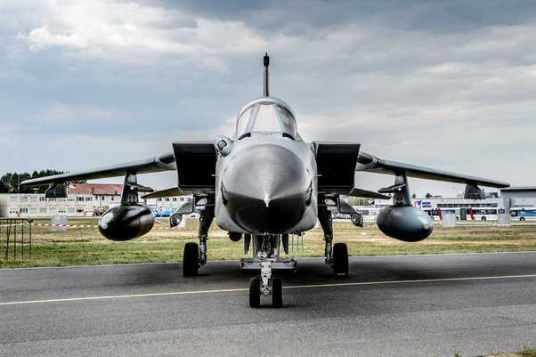

That’s my 17-year-old daughter, flying a Cherokee 6, without a single day of instruction. All she knows about flying, she’s gained from listening to me blather on about aviation since she was old enough to pull up on the couch. She has flight experience that measures in minutes, not hours. And yet, she’s the only one with her hands on the controls.
A nightmare scenario, right? It can’t possibly be legal? Turns out it is.
The difference is the gentleman sitting next to her—he’s both a commercial pilot and a flight instructor. Legally, he’s the “pilot in command” (PIC) of the aircraft, and the plane never really left his control. Even with my daughter’s inexpert handling, his hands were nearby, and though he mostly used his voice to guide us down to her first landing, he was always in charge.
It’s the way people learn to fly.
Sniping is first of all hard, especially on a moving target with observant security. Those men in that picture above; they are a United States Secret Service counter-sniper team. They’ll deploy either in or with a view of any decent or possible sniping location. The second you draw that gun; you’re either arrested or dead.
If you go for a more hands on approach, and up close and personal; you’ll die as well. The probably dozens of people protecting him will cut you down if you managed to assassinate him.

That totally depends on how fast you charge them and how big their battery packs are.
Chinese bus manufacturers build 2 MW charge systems, which is also a decent guess for the charge rate of a Tesla Semi, so multiply that by the number of vehicles to get the peak capacity requirement. It’s a lot, but not impossible.
It does mean the charge station will need a high voltage feed, 66 kV DC probably (or whatever the equivalent step is in the grid). A dozen 2 MW chargers at 66 kV is only about 400 A of current (with some assumptions about efficiency), which seems pretty feasible.
There’s also this option: